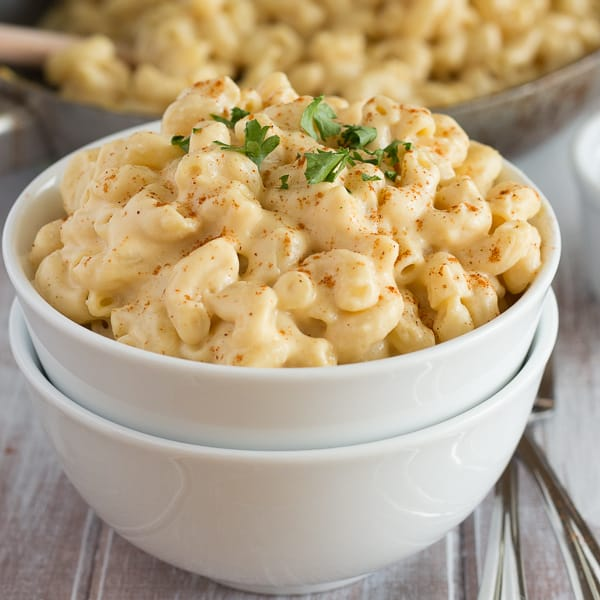

Vegan Mac and Cheese
Ingredients
- 10 Ounces of dried macaroni
- 1 cup peeled/diced carrots
- 1/4 cup peeled/dicedcarrots
- 3/4 cup of water
- 1/2 cup of raw cashews
- 1/4 cup of coconut milk
- 2 tablespoons of nutritional yeast flakes
- 1 tablespoon of lemon juice
- 1 teaspoon of salt
- 1/4 teaspoon of garlic powder
- 1 pinch of cayenne paprika
Instructions
- Cook macaroni al dente, according to package instructions (usually requires boiling for 6-8 minutes in salted water), drain, and set aside.
- Bring several cups of water to boil in a small pot. Place chopped potatoes, carrots, and onion in the boiling water, and cook for about 10 minutes, or until vegetables are tender and soft enough to blend. Cooking time will vary slightly, based on how small you have chopped your veggies.
- When veggies are soft enough to blend, use a slotted spoon to remove them from cooking water, and place them in your blender. Add 3/4 cup of that cooking water to your blender, along with your remaining ingredients (including cashews).
- Blend until smooth.
- Pour sauce over your cooked macaroni noodles in a dish of your choice, taste for salt, and serve immediately. Or, place macaroni mixture in a baking dish, sprinkle with bread crumbs, and bake at 350 degrees Fahrenheit for 15 minutes, or until crumbs are turning golden brown.

Similar Recipes